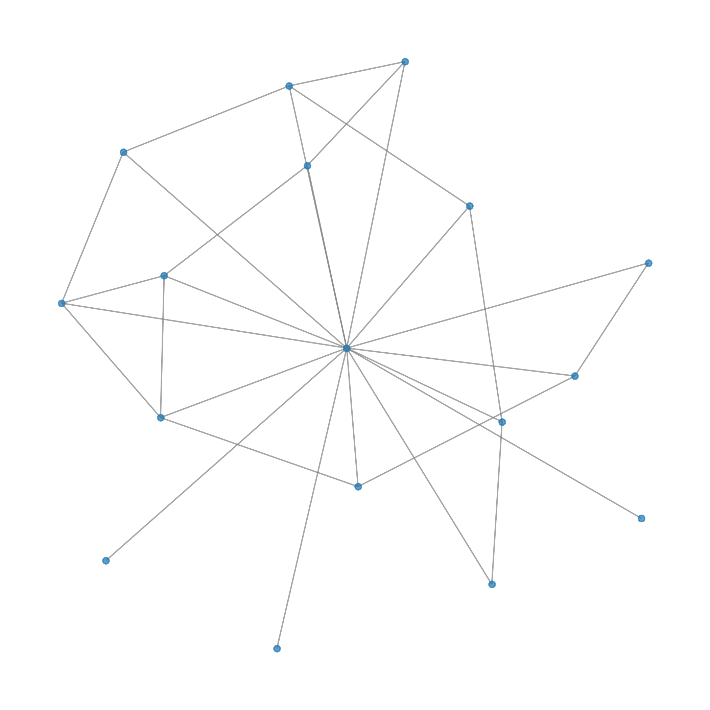
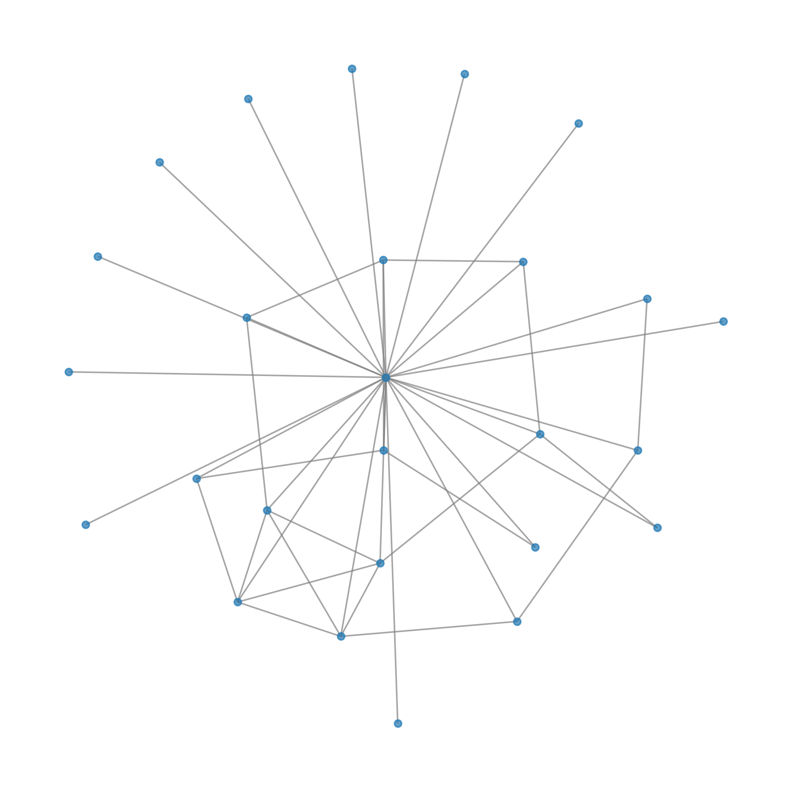

Reference (biogrid+hippie)

Community 0
GO:MF
| source | term_id | annotation | description | intersection_size | p_value | community |
|---|---|---|---|---|---|---|
| GO:MF | GO:0004674 | protein serine/threonine kinase activity | "Catalysis of the reactions: ATP + protein serine = ADP + protein serine phosphate, and ATP + protein threonine = ADP + protein threonine phosphate." [EC:2.7.11.-, GOC:bf, PMID:2956925] | 4 | 0.000143 | 0 |
| GO:MF | GO:0004672 | protein kinase activity | "Catalysis of the phosphorylation of an amino acid residue in a protein, usually according to the reaction: a protein + ATP = a phosphoprotein + ADP." [PMID:25399640] | 4 | 0.000569 | 0 |
| GO:MF | GO:0016773 | phosphotransferase activity, alcohol group as acceptor | "Catalysis of the transfer of a phosphorus-containing group from one compound (donor) to an alcohol group (acceptor)." [EC:2.7.1.-] | 4 | 0.001006 | 0 |
| GO:MF | GO:0016301 | kinase activity | "Catalysis of the transfer of a phosphate group, usually from ATP, to a substrate molecule." [ISBN:0198506732] | 4 | 0.001494 | 0 |
| GO:MF | GO:0016772 | transferase activity, transferring phosphorus-containing groups | "Catalysis of the transfer of a phosphorus-containing group from one compound (donor) to another (acceptor)." [GOC:jl, ISBN:0198506732] | 4 | 0.002861 | 0 |
WP
| source | term_id | annotation | description | intersection_size | p_value | community |
|---|---|---|---|---|---|---|
| WP | WP:WP3878 | ATM signaling in development and disease | ATM signaling in development and disease | 2 | 0.001227 | 0 |
| WP | WP:WP382 | MAPK signaling | MAPK signaling | 2 | 0.033936 | 0 |
KEGG
| source | term_id | annotation | description | intersection_size | p_value | community |
|---|---|---|---|---|---|---|
| KEGG | KEGG:04370 | VEGF signaling pathway | VEGF signaling pathway | 2 | 0.001258 | 0 |
| KEGG | KEGG:04010 | MAPK signaling pathway | MAPK signaling pathway | 2 | 0.033193 | 0 |
REAC
| source | term_id | annotation | description | intersection_size | p_value | community |
|---|---|---|---|---|---|---|
| REAC | REAC:R-HSA-4420097 | VEGFA-VEGFR2 Pathway | VEGFA-VEGFR2 Pathway | 2 | 0.039450 | 0 |
| REAC | REAC:R-HSA-194138 | Signaling by VEGF | Signaling by VEGF | 2 | 0.048311 | 0 |
Community 1
CORUM
| source | term_id | annotation | description | intersection_size | p_value | community |
|---|---|---|---|---|---|---|
| CORUM | CORUM:6136 | USP7-MAGEL2-TRIM27 complex | USP7-MAGEL2-TRIM27 complex | 1 | 0.049932 | 1 |
Community 2
KEGG
| source | term_id | annotation | description | intersection_size | p_value | community |
|---|---|---|---|---|---|---|
| KEGG | KEGG:04612 | Antigen processing and presentation | Antigen processing and presentation | 2 | 0.001725 | 2 |
MIRNA
| source | term_id | annotation | description | intersection_size | p_value | community |
|---|---|---|---|---|---|---|
| MIRNA | MIRNA:hsa-mir-152-3p | hsa-mir-152-3p | hsa-mir-152-3p | 2 | 0.009350 | 2 |
| MIRNA | MIRNA:hsa-mir-148a-3p | hsa-mir-148a-3p | hsa-mir-148a-3p | 2 | 0.021199 | 2 |
CORUM
| source | term_id | annotation | description | intersection_size | p_value | community |
|---|---|---|---|---|---|---|
| CORUM | CORUM:5716 | NOS3-HSP90 complex, VEGF induced | NOS3-HSP90 complex, VEGF induced | 1 | 0.024966 | 2 |
| CORUM | CORUM:4158 | HSP90-FKBP38-CAM-Ca(2+) complex | HSP90-FKBP38-CAM-Ca(2+) complex | 1 | 0.049932 | 2 |
| CORUM | CORUM:5718 | NOS3-HSP90-AKT complex, VEGF induced | NOS3-HSP90-AKT complex, VEGF induced | 1 | 0.049932 | 2 |
| CORUM | CORUM:6399 | DNAJC7-HSPA8-HSP90AA1 complex | DNAJC7-HSPA8-HSP90AA1 complex | 1 | 0.049932 | 2 |
| CORUM | CORUM:6402 | NMNAT2-HSP90 complex | NMNAT2-HSP90 complex | 1 | 0.049932 | 2 |
| CORUM | CORUM:6591 | Hsp90-p23 complex | Hsp90-p23 complex | 1 | 0.049932 | 2 |
| CORUM | CORUM:7284 | GSK3B-HSP90AA1-PKM2 complex | GSK3B-HSP90AA1-PKM2 complex | 1 | 0.049932 | 2 |
REAC
| source | term_id | annotation | description | intersection_size | p_value | community |
|---|---|---|---|---|---|---|
| REAC | REAC:R-HSA-9705671 | SARS-CoV-2 activates/modulates innate and adaptive immune responses | SARS-CoV-2 activates/modulates innate and adaptive immune responses | 2 | 0.032402 | 2 |
GO:MF
| source | term_id | annotation | description | intersection_size | p_value | community |
|---|---|---|---|---|---|---|
| GO:MF | GO:0002135 | CTP binding | "Binding to CTP, cytidine 5'-triphosphate." [GOC:hjd, ISBN:0124020607] | 1 | 0.049891 | 2 |
| GO:MF | GO:0032564 | dATP binding | "Binding to dATP, deoxyadenosine triphosphate." [GOC:mah] | 1 | 0.049891 | 2 |
HP
| source | term_id | annotation | description | intersection_size | p_value | community |
|---|---|---|---|---|---|---|
| HP | HP:0030530 | Arcuate scotoma | Arcuate scotoma | 1 | 0.049962 | 2 |
Community 3
GO:CC
| source | term_id | annotation | description | intersection_size | p_value | community |
|---|---|---|---|---|---|---|
| GO:CC | GO:0000408 | EKC/KEOPS complex | "A protein complex involved in t6A tRNA modification. For example, in Saccharomyces cerevisiae the complex contains Bud32p, Kae1p, Gon7p, Cgi121p, and Pcc1p." [GOC:elh, GOC:vw, PMID:16564010, PMID:16874308, PMID:21183954, PMID:23945934] | 2 | 0.000009 | 3 |
CORUM
| source | term_id | annotation | description | intersection_size | p_value | community |
|---|---|---|---|---|---|---|
| CORUM | CORUM:7555 | KEOPS complex | KEOPS complex | 2 | 0.000089 | 3 |
| CORUM | CORUM:7556 | PRAME complex | PRAME complex | 2 | 0.000310 | 3 |
GO:BP
| source | term_id | annotation | description | intersection_size | p_value | community |
|---|---|---|---|---|---|---|
| GO:BP | GO:0070525 | tRNA threonylcarbamoyladenosine metabolic process | "The chemical reactions and pathways involving tRNA threonylcarbamoyladenosine, a modified nucleoside found in some tRNA molecules." [GOC:imk, GOC:mah, PMID:19287007] | 2 | 0.000403 | 3 |
| GO:BP | GO:0008033 | tRNA processing | "The process in which a pre-tRNA molecule is converted to a mature tRNA, ready for addition of an aminoacyl group." [GOC:jl, PMID:12533506] | 2 | 0.022600 | 3 |
HP
| source | term_id | annotation | description | intersection_size | p_value | community |
|---|---|---|---|---|---|---|
| HP | HP:0100720 | Hypoplasia of the ear cartilage | Hypoplasia of the ear cartilage | 2 | 0.002391 | 3 |
| HP | HP:0002410 | Aqueductal stenosis | Stenosis of the cerebral aqueduct (also known as the mesencephalic duct, aqueductus mesencephali, or aqueduct of Sylvius), which connects the third cerebral ventricle in the diencephalon to the fourth ventricle, which is between the pons and cerebellum. | 2 | 0.013692 | 3 |
| HP | HP:0002036 | Hiatus hernia | The presence of a hernia in which the upper part of the stomach, i.e., mainly the gastric cardia protrudes through the diaphragmatic esophageal hiatus. | 2 | 0.025464 | 3 |
| HP | HP:0005108 | Abnormal intervertebral disk morphology | Any structural abnormality of the intervertebral disk. | 2 | 0.035860 | 3 |
REAC
| source | term_id | annotation | description | intersection_size | p_value | community |
|---|---|---|---|---|---|---|
| REAC | REAC:R-HSA-6782315 | tRNA modification in the nucleus and cytosol | tRNA modification in the nucleus and cytosol | 2 | 0.003721 | 3 |
| REAC | REAC:R-HSA-72306 | tRNA processing | tRNA processing | 2 | 0.023838 | 3 |
Community 4
GO:CC
| source | term_id | annotation | description | intersection_size | p_value | community |
|---|---|---|---|---|---|---|
| GO:CC | GO:1990229 | iron-sulfur cluster assembly complex | "A protein complex capable of assembling an iron-sulfur (Fe-S) cluster." [GOC:bhm, PMID:17350958] | 2 | 0.000159 | 4 |
GO:BP
| source | term_id | annotation | description | intersection_size | p_value | community |
|---|---|---|---|---|---|---|
| GO:BP | GO:0016226 | iron-sulfur cluster assembly | "The incorporation of iron and exogenous sulfur into a metallo-sulfur cluster." [GOC:jl, GOC:mah, GOC:pde, GOC:vw] | 2 | 0.001096 | 4 |
| GO:BP | GO:0031163 | metallo-sulfur cluster assembly | "The incorporation of a metal and exogenous sulfur into a metallo-sulfur cluster." [GOC:jl, GOC:mah, GOC:pde, GOC:vw] | 2 | 0.001096 | 4 |
CORUM
| source | term_id | annotation | description | intersection_size | p_value | community |
|---|---|---|---|---|---|---|
| CORUM | CORUM:6958 | BOLA2-GLRX3 complex | BOLA2-GLRX3 complex | 1 | 0.049932 | 4 |
Community 5
GO:CC
| source | term_id | annotation | description | intersection_size | p_value | community |
|---|---|---|---|---|---|---|
| GO:CC | GO:1990565 | HSP90-CDC37 chaperone complex | "A protein kinase chaperone complex required for the proper folding, maturation and stabilization of target proteins (mostly signaling protein kinases, some steroid hormone receptors), usually during or immediately after completion of translation. The highly conserved, phosphorylated CDC37-Ser13 (vertebrates) or cdc37-Ser14 (yeast) is essential for complex assembly and target protein binding. CDC37-Ser13 (Ser14) is phosphorylated by Casein kinase II (CK2), which in turn is a target of CDC37 creating a positive feedback loop. Complex binding also prevents rapid ubiquitin-dependent proteosomal degradation of target proteins." [GOC:bhm, GOC:pad, GOC:PARL, PMID:21855797, PMID:22939624] | 1 | 0.019977 | 5 |
REAC
| source | term_id | annotation | description | intersection_size | p_value | community |
|---|---|---|---|---|---|---|
| REAC | REAC:R-HSA-9820962 | Assembly and release of respiratory syncytial virus (RSV) virions | Assembly and release of respiratory syncytial virus (RSV) virions | 1 | 0.024966 | 5 |
| REAC | REAC:R-HSA-9834752 | Respiratory syncytial virus genome replication | Respiratory syncytial virus genome replication | 1 | 0.024966 | 5 |
CORUM
| source | term_id | annotation | description | intersection_size | p_value | community |
|---|---|---|---|---|---|---|
| CORUM | CORUM:6706 | CAPN1-HSP90AB1 complex | CAPN1-HSP90AB1 complex | 1 | 0.049932 | 5 |
Reference (biogrid+hippie)

Community 0
GO:MF
| source | term_id | annotation | description | intersection_size | p_value | community |
|---|---|---|---|---|---|---|
| GO:MF | GO:0004674 | protein serine/threonine kinase activity | "Catalysis of the reactions: ATP + protein serine = ADP + protein serine phosphate, and ATP + protein threonine = ADP + protein threonine phosphate." [EC:2.7.11.-, GOC:bf, PMID:2956925] | 4 | 0.004857 | 0 |
| GO:MF | GO:0004672 | protein kinase activity | "Catalysis of the phosphorylation of an amino acid residue in a protein, usually according to the reaction: a protein + ATP = a phosphoprotein + ADP." [PMID:25399640] | 4 | 0.018617 | 0 |
| GO:MF | GO:0016773 | phosphotransferase activity, alcohol group as acceptor | "Catalysis of the transfer of a phosphorus-containing group from one compound (donor) to an alcohol group (acceptor)." [EC:2.7.1.-] | 4 | 0.032262 | 0 |
| GO:MF | GO:0016301 | kinase activity | "Catalysis of the transfer of a phosphate group, usually from ATP, to a substrate molecule." [ISBN:0198506732] | 4 | 0.047182 | 0 |
WP
| source | term_id | annotation | description | intersection_size | p_value | community |
|---|---|---|---|---|---|---|
| WP | WP:WP3878 | ATM signaling in development and disease | ATM signaling in development and disease | 2 | 0.005509 | 0 |
KEGG
| source | term_id | annotation | description | intersection_size | p_value | community |
|---|---|---|---|---|---|---|
| KEGG | KEGG:04370 | VEGF signaling pathway | VEGF signaling pathway | 2 | 0.00703 | 0 |
| KEGG | KEGG:05146 | Amoebiasis | Amoebiasis | 2 | 0.02068 | 0 |
GO:BP
| source | term_id | annotation | description | intersection_size | p_value | community |
|---|---|---|---|---|---|---|
| GO:BP | GO:0010952 | positive regulation of peptidase activity | "Any process that increases the frequency, rate or extent of peptidase activity, the hydrolysis of peptide bonds within proteins." [GOC:dph, GOC:tb] | 2 | 0.049633 | 0 |
Community 1
GO:CC
| source | term_id | annotation | description | intersection_size | p_value | community |
|---|---|---|---|---|---|---|
| GO:CC | GO:0000408 | EKC/KEOPS complex | "A protein complex involved in t6A tRNA modification. For example, in Saccharomyces cerevisiae the complex contains Bud32p, Kae1p, Gon7p, Cgi121p, and Pcc1p." [GOC:elh, GOC:vw, PMID:16564010, PMID:16874308, PMID:21183954, PMID:23945934] | 2 | 0.000034 | 1 |
| GO:CC | GO:1990229 | iron-sulfur cluster assembly complex | "A protein complex capable of assembling an iron-sulfur (Fe-S) cluster." [GOC:bhm, PMID:17350958] | 2 | 0.000577 | 1 |
| GO:CC | GO:1990234 | transferase complex | "A protein complex capable of catalyzing the transfer of a group, e.g. a methyl group, glycosyl group, acyl group, phosphorus-containing, or other groups, from one compound (generally regarded as the donor) to another compound (generally regarded as the acceptor)." [GOC:bhm, PMID:16540464] | 3 | 0.037022 | 1 |
CORUM
| source | term_id | annotation | description | intersection_size | p_value | community |
|---|---|---|---|---|---|---|
| CORUM | CORUM:7555 | KEOPS complex | KEOPS complex | 2 | 0.000264 | 1 |
| CORUM | CORUM:7556 | PRAME complex | PRAME complex | 2 | 0.000924 | 1 |
| CORUM | CORUM:6958 | BOLA2-GLRX3 complex | BOLA2-GLRX3 complex | 1 | 0.049680 | 1 |
HP
| source | term_id | annotation | description | intersection_size | p_value | community |
|---|---|---|---|---|---|---|
| HP | HP:0100720 | Hypoplasia of the ear cartilage | Hypoplasia of the ear cartilage | 2 | 0.002391 | 1 |
| HP | HP:0002410 | Aqueductal stenosis | Stenosis of the cerebral aqueduct (also known as the mesencephalic duct, aqueductus mesencephali, or aqueduct of Sylvius), which connects the third cerebral ventricle in the diencephalon to the fourth ventricle, which is between the pons and cerebellum. | 2 | 0.013692 | 1 |
| HP | HP:0002036 | Hiatus hernia | The presence of a hernia in which the upper part of the stomach, i.e., mainly the gastric cardia protrudes through the diaphragmatic esophageal hiatus. | 2 | 0.025464 | 1 |
| HP | HP:0005108 | Abnormal intervertebral disk morphology | Any structural abnormality of the intervertebral disk. | 2 | 0.035860 | 1 |
GO:BP
| source | term_id | annotation | description | intersection_size | p_value | community |
|---|---|---|---|---|---|---|
| GO:BP | GO:0070525 | tRNA threonylcarbamoyladenosine metabolic process | "The chemical reactions and pathways involving tRNA threonylcarbamoyladenosine, a modified nucleoside found in some tRNA molecules." [GOC:imk, GOC:mah, PMID:19287007] | 2 | 0.003091 | 1 |
| GO:BP | GO:0016226 | iron-sulfur cluster assembly | "The incorporation of iron and exogenous sulfur into a metallo-sulfur cluster." [GOC:jl, GOC:mah, GOC:pde, GOC:vw] | 2 | 0.008399 | 1 |
| GO:BP | GO:0031163 | metallo-sulfur cluster assembly | "The incorporation of a metal and exogenous sulfur into a metallo-sulfur cluster." [GOC:jl, GOC:mah, GOC:pde, GOC:vw] | 2 | 0.008399 | 1 |
REAC
| source | term_id | annotation | description | intersection_size | p_value | community |
|---|---|---|---|---|---|---|
| REAC | REAC:R-HSA-6782315 | tRNA modification in the nucleus and cytosol | tRNA modification in the nucleus and cytosol | 2 | 0.01371 | 1 |
Community 2
GO:BP
| source | term_id | annotation | description | intersection_size | p_value | community |
|---|---|---|---|---|---|---|
| GO:BP | GO:0032435 | negative regulation of proteasomal ubiquitin-dependent protein catabolic process | "Any process that stops, prevents, or reduces the frequency, rate or extent of the breakdown of a protein or peptide by hydrolysis of its peptide bonds, initiated by the covalent attachment of ubiquitin, and mediated by the proteasome." [GOC:mah] | 2 | 0.005023 | 2 |
| GO:BP | GO:2000059 | negative regulation of ubiquitin-dependent protein catabolic process | "Any process that stops, prevents, or reduces the frequency, rate or extent of ubiquitin-dependent protein catabolic process." [GOC:BHF] | 2 | 0.010061 | 2 |
| GO:BP | GO:1901799 | negative regulation of proteasomal protein catabolic process | "Any process that stops, prevents or reduces the frequency, rate or extent of proteasomal protein catabolic process." [GOC:BHF, GOC:rl, GOC:TermGenie, PMID:21669198] | 2 | 0.010433 | 2 |
| GO:BP | GO:1903051 | negative regulation of proteolysis involved in protein catabolic process | "Any process that stops, prevents or reduces the frequency, rate or extent of proteolysis involved in protein catabolic process." [GO_REF:0000058, GOC:BHF, GOC:rl, GOC:TermGenie, PMID:18307834] | 2 | 0.017794 | 2 |
| GO:BP | GO:0042177 | negative regulation of protein catabolic process | "Any process that stops, prevents or reduces the frequency, rate or extent of protein catabolic process." [GO_REF:0000058, GOC:kmv, GOC:obol, GOC:TermGenie, PMID:24785082] | 2 | 0.045883 | 2 |
GO:CC
| source | term_id | annotation | description | intersection_size | p_value | community |
|---|---|---|---|---|---|---|
| GO:CC | GO:0101002 | ficolin-1-rich granule | "Highly exocytosable gelatinase-poor granules found in neutrophils and rich in ficolin-1. Ficolin-1 is released from neutrophil granules by stimulation with fMLP or PMA, and the majority becomes associated with the surface membrane of the cells and can be detected by flow cytometry." [GOC:mec, PMID:19741154] | 2 | 0.037785 | 2 |
| GO:CC | GO:1990565 | HSP90-CDC37 chaperone complex | "A protein kinase chaperone complex required for the proper folding, maturation and stabilization of target proteins (mostly signaling protein kinases, some steroid hormone receptors), usually during or immediately after completion of translation. The highly conserved, phosphorylated CDC37-Ser13 (vertebrates) or cdc37-Ser14 (yeast) is essential for complex assembly and target protein binding. CDC37-Ser13 (Ser14) is phosphorylated by Casein kinase II (CK2), which in turn is a target of CDC37 creating a positive feedback loop. Complex binding also prevents rapid ubiquitin-dependent proteosomal degradation of target proteins." [GOC:bhm, GOC:pad, GOC:PARL, PMID:21855797, PMID:22939624] | 1 | 0.049978 | 2 |
Community 3
KEGG
| source | term_id | annotation | description | intersection_size | p_value | community |
|---|---|---|---|---|---|---|
| KEGG | KEGG:04612 | Antigen processing and presentation | Antigen processing and presentation | 2 | 0.001725 | 3 |
MIRNA
| source | term_id | annotation | description | intersection_size | p_value | community |
|---|---|---|---|---|---|---|
| MIRNA | MIRNA:hsa-mir-152-3p | hsa-mir-152-3p | hsa-mir-152-3p | 2 | 0.009350 | 3 |
| MIRNA | MIRNA:hsa-mir-148a-3p | hsa-mir-148a-3p | hsa-mir-148a-3p | 2 | 0.021199 | 3 |
CORUM
| source | term_id | annotation | description | intersection_size | p_value | community |
|---|---|---|---|---|---|---|
| CORUM | CORUM:5716 | NOS3-HSP90 complex, VEGF induced | NOS3-HSP90 complex, VEGF induced | 1 | 0.024966 | 3 |
| CORUM | CORUM:4158 | HSP90-FKBP38-CAM-Ca(2+) complex | HSP90-FKBP38-CAM-Ca(2+) complex | 1 | 0.049932 | 3 |
| CORUM | CORUM:5718 | NOS3-HSP90-AKT complex, VEGF induced | NOS3-HSP90-AKT complex, VEGF induced | 1 | 0.049932 | 3 |
| CORUM | CORUM:6399 | DNAJC7-HSPA8-HSP90AA1 complex | DNAJC7-HSPA8-HSP90AA1 complex | 1 | 0.049932 | 3 |
| CORUM | CORUM:6402 | NMNAT2-HSP90 complex | NMNAT2-HSP90 complex | 1 | 0.049932 | 3 |
| CORUM | CORUM:6591 | Hsp90-p23 complex | Hsp90-p23 complex | 1 | 0.049932 | 3 |
| CORUM | CORUM:7284 | GSK3B-HSP90AA1-PKM2 complex | GSK3B-HSP90AA1-PKM2 complex | 1 | 0.049932 | 3 |
REAC
| source | term_id | annotation | description | intersection_size | p_value | community |
|---|---|---|---|---|---|---|
| REAC | REAC:R-HSA-9705671 | SARS-CoV-2 activates/modulates innate and adaptive immune responses | SARS-CoV-2 activates/modulates innate and adaptive immune responses | 2 | 0.032402 | 3 |
GO:MF
| source | term_id | annotation | description | intersection_size | p_value | community |
|---|---|---|---|---|---|---|
| GO:MF | GO:0002135 | CTP binding | "Binding to CTP, cytidine 5'-triphosphate." [GOC:hjd, ISBN:0124020607] | 1 | 0.049891 | 3 |
| GO:MF | GO:0032564 | dATP binding | "Binding to dATP, deoxyadenosine triphosphate." [GOC:mah] | 1 | 0.049891 | 3 |
HP
| source | term_id | annotation | description | intersection_size | p_value | community |
|---|---|---|---|---|---|---|
| HP | HP:0030530 | Arcuate scotoma | Arcuate scotoma | 1 | 0.049962 | 3 |
All Sources (biogrid+hippie+washu)

Community 0
REAC
| source | term_id | annotation | description | intersection_size | p_value | community |
|---|---|---|---|---|---|---|
| REAC | REAC:R-HSA-5339562 | Uptake and actions of bacterial toxins | Uptake and actions of bacterial toxins | 3 | 0.000007 | 0 |
| REAC | REAC:R-HSA-9834752 | Respiratory syncytial virus genome replication | Respiratory syncytial virus genome replication | 2 | 0.000017 | 0 |
| REAC | REAC:R-HSA-9820962 | Assembly and release of respiratory syncytial virus (RSV) virions | Assembly and release of respiratory syncytial virus (RSV) virions | 2 | 0.000017 | 0 |
| REAC | REAC:R-HSA-9824439 | Bacterial Infection Pathways | Bacterial Infection Pathways | 3 | 0.000139 | 0 |
| REAC | REAC:R-HSA-5336415 | Uptake and function of diphtheria toxin | Uptake and function of diphtheria toxin | 2 | 0.000252 | 0 |
| REAC | REAC:R-HSA-3371511 | HSF1 activation | HSF1 activation | 2 | 0.001107 | 0 |
| REAC | REAC:R-HSA-3371568 | Attenuation phase | Attenuation phase | 2 | 0.001526 | 0 |
| REAC | REAC:R-HSA-399954 | Sema3A PAK dependent Axon repulsion | Sema3A PAK dependent Axon repulsion | 2 | 0.002012 | 0 |
| REAC | REAC:R-HSA-9820965 | Respiratory syncytial virus (RSV) genome replication, transcription and translation | Respiratory syncytial virus (RSV) genome replication, transcription and translation | 2 | 0.002012 | 0 |
| REAC | REAC:R-HSA-9613829 | Chaperone Mediated Autophagy | Chaperone Mediated Autophagy | 2 | 0.003871 | 0 |
| REAC | REAC:R-HSA-9013418 | RHOBTB2 GTPase cycle | RHOBTB2 GTPase cycle | 2 | 0.004239 | 0 |
| REAC | REAC:R-HSA-3371571 | HSF1-dependent transactivation | HSF1-dependent transactivation | 2 | 0.004624 | 0 |
| REAC | REAC:R-HSA-8939211 | ESR-mediated signaling | ESR-mediated signaling | 3 | 0.004916 | 0 |
| REAC | REAC:R-HSA-9706574 | RHOBTB GTPase Cycle | RHOBTB GTPase Cycle | 2 | 0.009955 | 0 |
| REAC | REAC:R-HSA-9006931 | Signaling by Nuclear Receptors | Signaling by Nuclear Receptors | 3 | 0.011921 | 0 |
| REAC | REAC:R-HSA-3371497 | HSP90 chaperone cycle for steroid hormone receptors (SHR) in the presence of ligand | HSP90 chaperone cycle for steroid hormone receptors (SHR) in the presence of ligand | 2 | 0.026632 | 0 |
| REAC | REAC:R-HSA-373755 | Semaphorin interactions | Semaphorin interactions | 2 | 0.033612 | 0 |
| REAC | REAC:R-HSA-9009391 | Extra-nuclear estrogen signaling | Extra-nuclear estrogen signaling | 2 | 0.042573 | 0 |
GO:MF
| source | term_id | annotation | description | intersection_size | p_value | community |
|---|---|---|---|---|---|---|
| GO:MF | GO:0044183 | protein folding chaperone | "Binding to a protein or a protein-containing complex to assist the protein folding process." [GOC:mtg_cambridge_2009] | 3 | 0.000073 | 0 |
| GO:MF | GO:0030911 | TPR domain binding | "Binding to a tetratricopeptide repeat (TPR) domain of a protein, the consensus sequence of which is defined by a pattern of small and large hydrophobic amino acids and a structure composed of helices." [GOC:mah] | 2 | 0.000207 | 0 |
| GO:MF | GO:0030235 | nitric-oxide synthase regulator activity | "Binds to and modulates the activity of nitric oxide synthase." [GOC:mah] | 2 | 0.000207 | 0 |
| GO:MF | GO:0051082 | unfolded protein binding | "Binding to an unfolded protein." [GOC:ai] | 3 | 0.000340 | 0 |
| GO:MF | GO:0004517 | nitric-oxide synthase activity | "Catalysis of the reaction: L-arginine + n NADPH + n H+ + m O2 = citrulline + nitric oxide + n NADP+." [EC:1.14.13.39, RHEA:19897] | 2 | 0.000444 | 0 |
| GO:MF | GO:0070182 | DNA polymerase binding | "Binding to a DNA polymerase." [GOC:BHF, GOC:mah] | 2 | 0.001873 | 0 |
| GO:MF | GO:0004672 | protein kinase activity | "Catalysis of the phosphorylation of an amino acid residue in a protein, usually according to the reaction: a protein + ATP = a phosphoprotein + ADP." [PMID:25399640] | 4 | 0.002212 | 0 |
| GO:MF | GO:0023026 | MHC class II protein complex binding | "Binding to a class II major histocompatibility complex." [GOC:mtg_signal, GOC:vw] | 2 | 0.002720 | 0 |
| GO:MF | GO:0019887 | protein kinase regulator activity | "Modulates the activity of a protein kinase, an enzyme which phosphorylates a protein." [GOC:ai] | 3 | 0.003272 | 0 |
| GO:MF | GO:0016773 | phosphotransferase activity, alcohol group as acceptor | "Catalysis of the transfer of a phosphorus-containing group from one compound (donor) to an alcohol group (acceptor)." [EC:2.7.1.-] | 4 | 0.003889 | 0 |
| GO:MF | GO:0097718 | disordered domain specific binding | "Binding to a disordered domain of a protein." [GOC:gg, PMID:11746698] | 2 | 0.004000 | 0 |
| GO:MF | GO:0140662 | ATP-dependent protein folding chaperone | "Binding to a protein or a protein-containing complex to assist the protein folding process, driven by ATP hydrolysis." [PMID:27365453] | 2 | 0.004580 | 0 |
| GO:MF | GO:0019207 | kinase regulator activity | "Modulates the activity of a kinase, an enzyme which catalyzes of the transfer of a phosphate group, usually from ATP, to a substrate molecule." [GOC:ai] | 3 | 0.005080 | 0 |
| GO:MF | GO:0023023 | MHC protein complex binding | "Binding to a major histocompatibility complex." [GOC:mtg_signal, GOC:vw] | 2 | 0.005199 | 0 |
| GO:MF | GO:0016301 | kinase activity | "Catalysis of the transfer of a phosphate group, usually from ATP, to a substrate molecule." [ISBN:0198506732] | 4 | 0.005754 | 0 |
| GO:MF | GO:0016709 | oxidoreductase activity, acting on paired donors, with incorporation or reduction of molecular oxygen, NAD(P)H as one donor, and incorporation of one atom of oxygen | "Catalysis of an oxidation-reduction (redox) reaction in which hydrogen or electrons are transferred from NADH or NADPH and one other donor, and one atom of oxygen is incorporated into one donor." [EC:1.14.13.-] | 2 | 0.008471 | 0 |
| GO:MF | GO:0048156 | tau protein binding | "Binding to tau protein. tau is a microtubule-associated protein, implicated in Alzheimer's disease, Down Syndrome and ALS." [GOC:jid] | 2 | 0.008883 | 0 |
| GO:MF | GO:0016772 | transferase activity, transferring phosphorus-containing groups | "Catalysis of the transfer of a phosphorus-containing group from one compound (donor) to another (acceptor)." [GOC:jl, ISBN:0198506732] | 4 | 0.010935 | 0 |
| GO:MF | GO:0030234 | enzyme regulator activity | "Binds to and modulates the activity of an enzyme." [GOC:dph, GOC:mah, GOC:tb] | 4 | 0.018266 | 0 |
| GO:MF | GO:0097110 | scaffold protein binding | "Binding to a scaffold protein. Scaffold proteins are crucial regulators of many key signaling pathways. Although not strictly defined in function, they are known to interact and/or bind with multiple members of a signaling pathway, tethering them into complexes." [GOC:BHF, GOC:sjp, PMID:10433269, Wikipedia:Scaffold_protein] | 2 | 0.023694 | 0 |
| GO:MF | GO:0005524 | ATP binding | "Binding to ATP, adenosine 5'-triphosphate, a universally important coenzyme and enzyme regulator." [ISBN:0198506732] | 4 | 0.029808 | 0 |
| GO:MF | GO:0032559 | adenyl ribonucleotide binding | "Binding to an adenyl ribonucleotide, any compound consisting of adenosine esterified with (ortho)phosphate or an oligophosphate at any hydroxyl group on the ribose moiety." [GOC:mah] | 4 | 0.033196 | 0 |
| GO:MF | GO:0004674 | protein serine/threonine kinase activity | "Catalysis of the reactions: ATP + protein serine = ADP + protein serine phosphate, and ATP + protein threonine = ADP + protein threonine phosphate." [EC:2.7.11.-, GOC:bf, PMID:2956925] | 3 | 0.040229 | 0 |
| GO:MF | GO:0030554 | adenyl nucleotide binding | "Binding to an adenyl nucleotide, an adenosine esterified with (ortho)phosphate." [ISBN:0198506732] | 4 | 0.041705 | 0 |
| GO:MF | GO:0032564 | dATP binding | "Binding to dATP, deoxyadenosine triphosphate." [GOC:mah] | 1 | 0.049992 | 0 |
| GO:MF | GO:0002135 | CTP binding | "Binding to CTP, cytidine 5'-triphosphate." [GOC:hjd, ISBN:0124020607] | 1 | 0.049992 | 0 |
GO:CC
| source | term_id | annotation | description | intersection_size | p_value | community |
|---|---|---|---|---|---|---|
| GO:CC | GO:0044294 | dendritic growth cone | "The migrating motile tip of a growing nerve cell dendrite." [GOC:jl] | 2 | 0.000122 | 0 |
| GO:CC | GO:0044292 | dendrite terminus | "A structure at the distal end of a dendrite adapted to carry out a specific function, e.g. dendriole." [GOC:jl, NIF_Subcellular:sao28175134] | 2 | 0.000307 | 0 |
| GO:CC | GO:0044295 | axonal growth cone | "The migrating motile tip of a growing nerve cell axon." [GOC:jl, NIF_Subcellular:sao203987954] | 2 | 0.001467 | 0 |
| GO:CC | GO:0030424 | axon | "The long process of a neuron that conducts nerve impulses, usually away from the cell body to the terminals and varicosities, which are sites of storage and release of neurotransmitter." [GOC:nln, ISBN:0198506732] | 3 | 0.014166 | 0 |
| GO:CC | GO:0048770 | pigment granule | "A small, subcellular membrane-bounded vesicle containing pigment and/or pigment precursor molecules. Pigment granule biogenesis is poorly understood, as pigment granules are derived from multiple sources including the endoplasmic reticulum, coated vesicles, lysosomes, and endosomes." [GOC:jid, GOC:mh] | 2 | 0.021616 | 0 |
| GO:CC | GO:0042470 | melanosome | "A tissue-specific, membrane-bounded cytoplasmic organelle within which melanin pigments are synthesized and stored. Melanosomes are synthesized in melanocyte cells." [GOC:jl, PMID:11584301] | 2 | 0.021616 | 0 |
| GO:CC | GO:1904813 | ficolin-1-rich granule lumen | "Any membrane-enclosed lumen that is part of a ficolin-1-rich granule." [GO_REF:0000064, GOC:TermGenie, PMID:23650620] | 2 | 0.025577 | 0 |
| GO:CC | GO:0030426 | growth cone | "The migrating motile tip of a growing neuron projection, where actin accumulates, and the actin cytoskeleton is the most dynamic." [GOC:aruk, GOC:bc, ISBN:0815316194, PMID:10082468] | 2 | 0.046925 | 0 |
| GO:CC | GO:0030427 | site of polarized growth | "Any part of a cell where non-isotropic growth takes place." [GOC:mah] | 2 | 0.049753 | 0 |
| GO:CC | GO:1990565 | HSP90-CDC37 chaperone complex | "A protein kinase chaperone complex required for the proper folding, maturation and stabilization of target proteins (mostly signaling protein kinases, some steroid hormone receptors), usually during or immediately after completion of translation. The highly conserved, phosphorylated CDC37-Ser13 (vertebrates) or cdc37-Ser14 (yeast) is essential for complex assembly and target protein binding. CDC37-Ser13 (Ser14) is phosphorylated by Casein kinase II (CK2), which in turn is a target of CDC37 creating a positive feedback loop. Complex binding also prevents rapid ubiquitin-dependent proteosomal degradation of target proteins." [GOC:bhm, GOC:pad, GOC:PARL, PMID:21855797, PMID:22939624] | 1 | 0.049885 | 0 |
| GO:CC | GO:0005816 | spindle pole body | "The microtubule organizing center in fungi; functionally homologous to the animal cell centrosome." [ISBN:0879693568] | 1 | 0.049885 | 0 |
CORUM
| source | term_id | annotation | description | intersection_size | p_value | community |
|---|---|---|---|---|---|---|
| CORUM | CORUM:2112 | CDC37-HSP90AA1-HSP90AB1-MAP3K11 complex | CDC37-HSP90AA1-HSP90AB1-MAP3K11 complex | 2 | 0.000177 | 0 |
| CORUM | CORUM:5234 | IKBKB-CDC37-KIAA1967-HSP90AB1-HSP90AA1 complex | IKBKB-CDC37-KIAA1967-HSP90AB1-HSP90AA1 complex | 2 | 0.000295 | 0 |
| CORUM | CORUM:5269 | TNF-alpha/NF-kappa B signaling complex 8 | TNF-alpha/NF-kappa B signaling complex 8 | 2 | 0.000443 | 0 |
| CORUM | CORUM:5268 | TNF-alpha/NF-kappa B signaling complex 7 | TNF-alpha/NF-kappa B signaling complex 7 | 2 | 0.000827 | 0 |
| CORUM | CORUM:5212 | Kinase maturation complex 2 | Kinase maturation complex 2 | 2 | 0.000827 | 0 |
| CORUM | CORUM:5286 | TNF-alpha/NF-kappa B signaling complex 10 | TNF-alpha/NF-kappa B signaling complex 10 | 2 | 0.001328 | 0 |
| CORUM | CORUM:5266 | TNF-alpha/NF-kappa B signaling complex 6 | TNF-alpha/NF-kappa B signaling complex 6 | 2 | 0.002301 | 0 |
| CORUM | CORUM:5199 | Kinase maturation complex 1 | Kinase maturation complex 1 | 2 | 0.003538 | 0 |
| CORUM | CORUM:5716 | NOS3-HSP90 complex, VEGF induced | NOS3-HSP90 complex, VEGF induced | 1 | 0.049988 | 0 |
KEGG
| source | term_id | annotation | description | intersection_size | p_value | community |
|---|---|---|---|---|---|---|
| KEGG | KEGG:05215 | Prostate cancer | Prostate cancer | 3 | 0.000309 | 0 |
| KEGG | KEGG:04914 | Progesterone-mediated oocyte maturation | Progesterone-mediated oocyte maturation | 3 | 0.000359 | 0 |
| KEGG | KEGG:04915 | Estrogen signaling pathway | Estrogen signaling pathway | 3 | 0.000856 | 0 |
| KEGG | KEGG:05207 | Chemical carcinogenesis - receptor activation | Chemical carcinogenesis - receptor activation | 3 | 0.003199 | 0 |
| KEGG | KEGG:05132 | Salmonella infection | Salmonella infection | 3 | 0.005251 | 0 |
| KEGG | KEGG:04370 | VEGF signaling pathway | VEGF signaling pathway | 2 | 0.015185 | 0 |
| KEGG | KEGG:04151 | PI3K-Akt signaling pathway | PI3K-Akt signaling pathway | 3 | 0.015252 | 0 |
| KEGG | KEGG:04612 | Antigen processing and presentation | Antigen processing and presentation | 2 | 0.020787 | 0 |
| KEGG | KEGG:04657 | IL-17 signaling pathway | IL-17 signaling pathway | 2 | 0.036956 | 0 |
| KEGG | KEGG:04659 | Th17 cell differentiation | Th17 cell differentiation | 2 | 0.048105 | 0 |
| KEGG | KEGG:05200 | Pathways in cancer | Pathways in cancer | 3 | 0.048841 | 0 |
GO:BP
| source | term_id | annotation | description | intersection_size | p_value | community |
|---|---|---|---|---|---|---|
| GO:BP | GO:1905323 | telomerase holoenzyme complex assembly | "The aggregation, arrangement and bonding together of a set of components to form a telomerase holoenzyme complex." [GO_REF:0000079, GOC:TermGenie, PMID:26305931] | 2 | 0.000754 | 0 |
| GO:BP | GO:0009408 | response to heat | "Any process that results in a change in state or activity of a cell or an organism (in terms of movement, secretion, enzyme production, gene expression, etc.) as a result of a heat stimulus, a temperature stimulus above the optimal temperature for that organism." [GOC:lr] | 3 | 0.000848 | 0 |
| GO:BP | GO:0006986 | response to unfolded protein | "Any process that results in a change in state or activity of a cell or an organism (in terms of movement, secretion, enzyme production, gene expression, etc.) as a result of an unfolded protein stimulus." [GOC:jl] | 3 | 0.002271 | 0 |
| GO:BP | GO:0035966 | response to topologically incorrect protein | "Any process that results in a change in state or activity of a cell or an organism (in terms of movement, secretion, enzyme production, gene expression, etc.) as a result of a protein that is not folded in its correct three-dimensional structure." [GOC:bf] | 3 | 0.003206 | 0 |
| GO:BP | GO:0009266 | response to temperature stimulus | "Any process that results in a change in state or activity of a cell or an organism (in terms of movement, secretion, enzyme production, gene expression, etc.) as a result of a temperature stimulus." [GOC:hb] | 3 | 0.004073 | 0 |
| GO:BP | GO:0006457 | protein folding | "The process of assisting in the covalent and noncovalent assembly of single chain polypeptides or multisubunit complexes into the correct tertiary structure." [GOC:go_curators, GOC:rb] | 3 | 0.008711 | 0 |
| GO:BP | GO:0051131 | chaperone-mediated protein complex assembly | "The aggregation, arrangement and bonding together of a set of components to form a protein complex, mediated by chaperone molecules that do not form part of the finished complex." [GOC:ai] | 2 | 0.009889 | 0 |
| GO:BP | GO:0042026 | protein refolding | "The process carried out by a cell that restores the biological activity of an unfolded or misfolded protein, using helper proteins such as chaperones." [GOC:mb] | 2 | 0.012573 | 0 |
| GO:BP | GO:0031399 | regulation of protein modification process | "Any process that modulates the frequency, rate or extent of the covalent alteration of one or more amino acid residues within a protein." [GOC:mah, GOC:tb] | 4 | 0.023479 | 0 |
| GO:BP | GO:0045429 | positive regulation of nitric oxide biosynthetic process | "Any process that activates or increases the frequency, rate or extent of the chemical reactions and pathways resulting in the formation of nitric oxide." [GOC:go_curators] | 2 | 0.025156 | 0 |
| GO:BP | GO:1904407 | positive regulation of nitric oxide metabolic process | "Any process that activates or increases the frequency, rate or extent of nitric oxide metabolic process." [GO_REF:0000058, GOC:TermGenie, PMID:11991626] | 2 | 0.026513 | 0 |
| GO:BP | GO:0036211 | protein modification process | "The covalent alteration of one or more amino acids occurring in proteins, peptides and nascent polypeptides (co-translational, post-translational modifications). Includes the modification of charged tRNAs that are destined to occur in a protein (pre-translation modification)." [GOC:bf, GOC:jl] | 5 | 0.035950 | 0 |
| GO:BP | GO:0006468 | protein phosphorylation | "The process of introducing a phosphate group on to a protein." [GOC:hb] | 4 | 0.043677 | 0 |
| GO:BP | GO:0043412 | macromolecule modification | "The covalent alteration of one or more monomeric units in a polypeptide, polynucleotide, polysaccharide, or other biological macromolecule, resulting in a change in its properties." [GOC:go_curators] | 5 | 0.049185 | 0 |
TF
| source | term_id | annotation | description | intersection_size | p_value | community |
|---|---|---|---|---|---|---|
| TF | TF:M11655_1 | Factor: HSF1; motif: NGAANGTTCKRGAAN; match class: 1 | Factor: HSF1; motif: NGAANGTTCKRGAAN; match class: 1 | 3 | 0.000803 | 0 |
| TF | TF:M11662_1 | Factor: HSF2; motif: RGAANGTTCYRGAAN; match class: 1 | Factor: HSF2; motif: RGAANGTTCYRGAAN; match class: 1 | 2 | 0.002618 | 0 |
| TF | TF:M11658_1 | Factor: HSF4; motif: RGAANNTTCYRGAAN; match class: 1 | Factor: HSF4; motif: RGAANNTTCYRGAAN; match class: 1 | 2 | 0.009035 | 0 |
| TF | TF:M11656_1 | Factor: HSF1; motif: RGAANRTTCYRGAAN; match class: 1 | Factor: HSF1; motif: RGAANRTTCYRGAAN; match class: 1 | 3 | 0.012086 | 0 |
| TF | TF:M09950_1 | Factor: HSF1; motif: NRGAANNTTCYRGAA; match class: 1 | Factor: HSF1; motif: NRGAANNTTCYRGAA; match class: 1 | 3 | 0.018184 | 0 |
| TF | TF:M01023_1 | Factor: HSF1; motif: NTTCTRGAAVNTTCTYM; match class: 1 | Factor: HSF1; motif: NTTCTRGAAVNTTCTYM; match class: 1 | 3 | 0.019745 | 0 |
WP
| source | term_id | annotation | description | intersection_size | p_value | community |
|---|---|---|---|---|---|---|
| WP | WP:WP3932 | Focal adhesion PI3K Akt mTOR signaling | Focal adhesion PI3K Akt mTOR signaling | 3 | 0.013395 | 0 |
| WP | WP:WP2586 | Aryl hydrocarbon receptor pathway | Aryl hydrocarbon receptor pathway | 2 | 0.013605 | 0 |
| WP | WP:WP4172 | PI3K Akt signaling | PI3K Akt signaling | 3 | 0.018411 | 0 |
| WP | WP:WP3888 | VEGFA VEGFR2 signaling | VEGFA VEGFR2 signaling | 3 | 0.038345 | 0 |
Community 3
GO:CC
| source | term_id | annotation | description | intersection_size | p_value | community |
|---|---|---|---|---|---|---|
| GO:CC | GO:0000408 | EKC/KEOPS complex | "A protein complex involved in t6A tRNA modification. For example, in Saccharomyces cerevisiae the complex contains Bud32p, Kae1p, Gon7p, Cgi121p, and Pcc1p." [GOC:elh, GOC:vw, PMID:16564010, PMID:16874308, PMID:21183954, PMID:23945934] | 2 | 0.000009 | 3 |
CORUM
| source | term_id | annotation | description | intersection_size | p_value | community |
|---|---|---|---|---|---|---|
| CORUM | CORUM:7555 | KEOPS complex | KEOPS complex | 2 | 0.000089 | 3 |
| CORUM | CORUM:7556 | PRAME complex | PRAME complex | 2 | 0.000310 | 3 |
GO:BP
| source | term_id | annotation | description | intersection_size | p_value | community |
|---|---|---|---|---|---|---|
| GO:BP | GO:0070525 | tRNA threonylcarbamoyladenosine metabolic process | "The chemical reactions and pathways involving tRNA threonylcarbamoyladenosine, a modified nucleoside found in some tRNA molecules." [GOC:imk, GOC:mah, PMID:19287007] | 2 | 0.000403 | 3 |
| GO:BP | GO:0008033 | tRNA processing | "The process in which a pre-tRNA molecule is converted to a mature tRNA, ready for addition of an aminoacyl group." [GOC:jl, PMID:12533506] | 2 | 0.022600 | 3 |
HP
| source | term_id | annotation | description | intersection_size | p_value | community |
|---|---|---|---|---|---|---|
| HP | HP:0100720 | Hypoplasia of the ear cartilage | Hypoplasia of the ear cartilage | 2 | 0.002391 | 3 |
| HP | HP:0002410 | Aqueductal stenosis | Stenosis of the cerebral aqueduct (also known as the mesencephalic duct, aqueductus mesencephali, or aqueduct of Sylvius), which connects the third cerebral ventricle in the diencephalon to the fourth ventricle, which is between the pons and cerebellum. | 2 | 0.013692 | 3 |
| HP | HP:0002036 | Hiatus hernia | The presence of a hernia in which the upper part of the stomach, i.e., mainly the gastric cardia protrudes through the diaphragmatic esophageal hiatus. | 2 | 0.025464 | 3 |
| HP | HP:0005108 | Abnormal intervertebral disk morphology | Any structural abnormality of the intervertebral disk. | 2 | 0.035860 | 3 |
REAC
| source | term_id | annotation | description | intersection_size | p_value | community |
|---|---|---|---|---|---|---|
| REAC | REAC:R-HSA-6782315 | tRNA modification in the nucleus and cytosol | tRNA modification in the nucleus and cytosol | 2 | 0.003721 | 3 |
| REAC | REAC:R-HSA-72306 | tRNA processing | tRNA processing | 2 | 0.023838 | 3 |
Community 11
WP
| source | term_id | annotation | description | intersection_size | p_value | community |
|---|---|---|---|---|---|---|
| WP | WP:WP5189 | Copper metabolism | Copper metabolism | 1 | 0.024975 | 11 |
GO:MF
| source | term_id | annotation | description | intersection_size | p_value | community |
|---|---|---|---|---|---|---|
| GO:MF | GO:0043682 | P-type divalent copper transporter activity | "Enables the transfer of a solute or solutes from one side of a membrane to the other according to the reaction: ATP + H2O + Cu2+(in) = ADP + phosphate + Cu2+(out)." [RHEA:10376] | 1 | 0.049891 | 11 |
| GO:MF | GO:0140581 | P-type monovalent copper transporter activity | "Enables the transfer of a solute or solutes from one side of a membrane to the other according to the reaction: ATP + H2O + Cu+(in) = ADP + phosphate + Cu+(out)." [RHEA:25792] | 1 | 0.049891 | 11 |
HP
| source | term_id | annotation | description | intersection_size | p_value | community |
|---|---|---|---|---|---|---|
| HP | HP:0010839 | Increased urinary copper concentration | An increased concentration of copper in the urine. | 1 | 0.049962 | 11 |
| HP | HP:0025640 | Abnormal urinary mineral level | An abnormal concentration or amount of a mineral in the urine. Medically relevant minerals include calcium, phosphorus, potassium, sodium, chloride, magnesium, iron, zinc, iodine, chromium, copper, fluoride, molybdenum, manganese, and selenium. | 1 | 0.049962 | 11 |
| HP | HP:0032254 | Increased circulating copper concentration | An abnormally elevated concentration of copper in the blood circulation. This term refers to the total copper concentration. | 1 | 0.049962 | 11 |
| HP | HP:0034254 | Face of the giant panda sign | The face of the giant panda sign on T2-weighted MRI is characterized by preservation of normal signal intensity in the red nuclei and lateral portion of the pars reticulata of the substantia nigra, high signal in the tegmentum, and hypointensity of the superior colliculus. The findings are said to resemble the face of a giant panda. | 1 | 0.049962 | 11 |
| HP | HP:0045036 | Abnormal urinary copper concentration | Abnormal urinary copper concentration | 1 | 0.049962 | 11 |
| HP | HP:0200032 | Kayser-Fleischer ring | Grey-green or brownish-pigmented ring in the deep epithelial layers at the outer border of the cornea. | 1 | 0.049962 | 11 |
| HP | HP:6000642 | Sunflower cataract | Sunflower cataract (SC) is a type of anterior subcapsular cataract almost only seen in Wilson disease, an autosomal-recessive condition with a defect in the metabolism of copper leading to accumulation of copper in the liver and basal ganglia. SC consists of a thin, centralized opacification that is located directly under the anterior capsule and encompasses between one-third and one-half of the anterior lens pole surface area. In all cases, the central opacification is surrounded by additional, secondary opacifications arranged in ray-like structures around it. This pattern is said to resemble a sunflower, with a large central disk surrounded by petals. | 1 | 0.049962 | 11 |
Community 13
CORUM
| source | term_id | annotation | description | intersection_size | p_value | community |
|---|---|---|---|---|---|---|
| CORUM | CORUM:6958 | BOLA2-GLRX3 complex | BOLA2-GLRX3 complex | 1 | 0.024966 | 13 |
Community 14
HP
| source | term_id | annotation | description | intersection_size | p_value | community |
|---|---|---|---|---|---|---|
| HP | HP:0030530 | Arcuate scotoma | Arcuate scotoma | 1 | 0.049962 | 14 |
All Sources (biogrid+hippie+washu)

Community 0
HP
| source | term_id | annotation | description | intersection_size | p_value | community |
|---|---|---|---|---|---|---|
| HP | HP:0033834 | Malaise | A feeling of general discomfort, weakness, or lack of health. | 2 | 0.034266 | 0 |
WP
| source | term_id | annotation | description | intersection_size | p_value | community |
|---|---|---|---|---|---|---|
| WP | WP:WP5189 | Copper metabolism | Copper metabolism | 1 | 0.039736 | 0 |
Community 1
GO:MF
| source | term_id | annotation | description | intersection_size | p_value | community |
|---|---|---|---|---|---|---|
| GO:MF | GO:0030331 | nuclear estrogen receptor binding | "Binding to a nuclear estrogen receptor." [GOC:ai] | 2 | 0.008068 | 1 |
REAC
| source | term_id | annotation | description | intersection_size | p_value | community |
|---|---|---|---|---|---|---|
| REAC | REAC:R-HSA-8852135 | Protein ubiquitination | Protein ubiquitination | 2 | 0.049982 | 1 |
Community 2
REAC
| source | term_id | annotation | description | intersection_size | p_value | community |
|---|---|---|---|---|---|---|
| REAC | REAC:R-HSA-5339562 | Uptake and actions of bacterial toxins | Uptake and actions of bacterial toxins | 3 | 0.000007 | 2 |
| REAC | REAC:R-HSA-9820962 | Assembly and release of respiratory syncytial virus (RSV) virions | Assembly and release of respiratory syncytial virus (RSV) virions | 2 | 0.000017 | 2 |
| REAC | REAC:R-HSA-9834752 | Respiratory syncytial virus genome replication | Respiratory syncytial virus genome replication | 2 | 0.000017 | 2 |
| REAC | REAC:R-HSA-9824439 | Bacterial Infection Pathways | Bacterial Infection Pathways | 3 | 0.000139 | 2 |
| REAC | REAC:R-HSA-5336415 | Uptake and function of diphtheria toxin | Uptake and function of diphtheria toxin | 2 | 0.000252 | 2 |
| REAC | REAC:R-HSA-3371511 | HSF1 activation | HSF1 activation | 2 | 0.001107 | 2 |
| REAC | REAC:R-HSA-3371568 | Attenuation phase | Attenuation phase | 2 | 0.001526 | 2 |
| REAC | REAC:R-HSA-399954 | Sema3A PAK dependent Axon repulsion | Sema3A PAK dependent Axon repulsion | 2 | 0.002012 | 2 |
| REAC | REAC:R-HSA-9820965 | Respiratory syncytial virus (RSV) genome replication, transcription and translation | Respiratory syncytial virus (RSV) genome replication, transcription and translation | 2 | 0.002012 | 2 |
| REAC | REAC:R-HSA-9613829 | Chaperone Mediated Autophagy | Chaperone Mediated Autophagy | 2 | 0.003871 | 2 |
| REAC | REAC:R-HSA-9013418 | RHOBTB2 GTPase cycle | RHOBTB2 GTPase cycle | 2 | 0.004239 | 2 |
| REAC | REAC:R-HSA-3371571 | HSF1-dependent transactivation | HSF1-dependent transactivation | 2 | 0.004624 | 2 |
| REAC | REAC:R-HSA-8939211 | ESR-mediated signaling | ESR-mediated signaling | 3 | 0.004916 | 2 |
| REAC | REAC:R-HSA-9706574 | RHOBTB GTPase Cycle | RHOBTB GTPase Cycle | 2 | 0.009955 | 2 |
| REAC | REAC:R-HSA-9006931 | Signaling by Nuclear Receptors | Signaling by Nuclear Receptors | 3 | 0.011921 | 2 |
| REAC | REAC:R-HSA-3371497 | HSP90 chaperone cycle for steroid hormone receptors (SHR) in the presence of ligand | HSP90 chaperone cycle for steroid hormone receptors (SHR) in the presence of ligand | 2 | 0.026632 | 2 |
| REAC | REAC:R-HSA-373755 | Semaphorin interactions | Semaphorin interactions | 2 | 0.033612 | 2 |
| REAC | REAC:R-HSA-9009391 | Extra-nuclear estrogen signaling | Extra-nuclear estrogen signaling | 2 | 0.042573 | 2 |
GO:MF
| source | term_id | annotation | description | intersection_size | p_value | community |
|---|---|---|---|---|---|---|
| GO:MF | GO:0044183 | protein folding chaperone | "Binding to a protein or a protein-containing complex to assist the protein folding process." [GOC:mtg_cambridge_2009] | 3 | 0.000037 | 2 |
| GO:MF | GO:0030911 | TPR domain binding | "Binding to a tetratricopeptide repeat (TPR) domain of a protein, the consensus sequence of which is defined by a pattern of small and large hydrophobic amino acids and a structure composed of helices." [GOC:mah] | 2 | 0.000155 | 2 |
| GO:MF | GO:0030235 | nitric-oxide synthase regulator activity | "Binds to and modulates the activity of nitric oxide synthase." [GOC:mah] | 2 | 0.000155 | 2 |
| GO:MF | GO:0051082 | unfolded protein binding | "Binding to an unfolded protein." [GOC:ai] | 3 | 0.000170 | 2 |
| GO:MF | GO:0004517 | nitric-oxide synthase activity | "Catalysis of the reaction: L-arginine + n NADPH + n H+ + m O2 = citrulline + nitric oxide + n NADP+." [EC:1.14.13.39, RHEA:19897] | 2 | 0.000333 | 2 |
| GO:MF | GO:0070182 | DNA polymerase binding | "Binding to a DNA polymerase." [GOC:BHF, GOC:mah] | 2 | 0.001403 | 2 |
| GO:MF | GO:0019887 | protein kinase regulator activity | "Modulates the activity of a protein kinase, an enzyme which phosphorylates a protein." [GOC:ai] | 3 | 0.001647 | 2 |
| GO:MF | GO:0023026 | MHC class II protein complex binding | "Binding to a class II major histocompatibility complex." [GOC:mtg_signal, GOC:vw] | 2 | 0.002038 | 2 |
| GO:MF | GO:0019207 | kinase regulator activity | "Modulates the activity of a kinase, an enzyme which catalyzes of the transfer of a phosphate group, usually from ATP, to a substrate molecule." [GOC:ai] | 3 | 0.002561 | 2 |
| GO:MF | GO:0097718 | disordered domain specific binding | "Binding to a disordered domain of a protein." [GOC:gg, PMID:11746698] | 2 | 0.002996 | 2 |
| GO:MF | GO:0140662 | ATP-dependent protein folding chaperone | "Binding to a protein or a protein-containing complex to assist the protein folding process, driven by ATP hydrolysis." [PMID:27365453] | 2 | 0.003431 | 2 |
| GO:MF | GO:0023023 | MHC protein complex binding | "Binding to a major histocompatibility complex." [GOC:mtg_signal, GOC:vw] | 2 | 0.003896 | 2 |
| GO:MF | GO:0030234 | enzyme regulator activity | "Binds to and modulates the activity of an enzyme." [GOC:dph, GOC:mah, GOC:tb] | 4 | 0.004811 | 2 |
| GO:MF | GO:0016709 | oxidoreductase activity, acting on paired donors, with incorporation or reduction of molecular oxygen, NAD(P)H as one donor, and incorporation of one atom of oxygen | "Catalysis of an oxidation-reduction (redox) reaction in which hydrogen or electrons are transferred from NADH or NADPH and one other donor, and one atom of oxygen is incorporated into one donor." [EC:1.14.13.-] | 2 | 0.006349 | 2 |
| GO:MF | GO:0048156 | tau protein binding | "Binding to tau protein. tau is a microtubule-associated protein, implicated in Alzheimer's disease, Down Syndrome and ALS." [GOC:jid] | 2 | 0.006658 | 2 |
| GO:MF | GO:0097110 | scaffold protein binding | "Binding to a scaffold protein. Scaffold proteins are crucial regulators of many key signaling pathways. Although not strictly defined in function, they are known to interact and/or bind with multiple members of a signaling pathway, tethering them into complexes." [GOC:BHF, GOC:sjp, PMID:10433269, Wikipedia:Scaffold_protein] | 2 | 0.017775 | 2 |
| GO:MF | GO:0098772 | molecular function regulator activity | "A molecular function regulator regulates the activity of its target via non-covalent binding that does not result in covalent modification to the target. Examples of molecular function regulators include regulatory subunits of multimeric enzymes and channels. Mechanisms of regulation include allosteric changes in the target and competitive inhibition." [GOC:dos, GOC:pt] | 4 | 0.034804 | 2 |
| GO:MF | GO:0019901 | protein kinase binding | "Binding to a protein kinase, any enzyme that catalyzes the transfer of a phosphate group, usually from ATP, to a protein substrate." [GOC:jl] | 3 | 0.043502 | 2 |
| GO:MF | GO:0042803 | protein homodimerization activity | "Binding to an identical protein to form a homodimer." [GOC:jl] | 3 | 0.046079 | 2 |
| GO:MF | GO:0004497 | monooxygenase activity | "Catalysis of the incorporation of one atom from molecular oxygen into a compound and the reduction of the other atom of oxygen to water." [ISBN:0198506732] | 2 | 0.047269 | 2 |
| GO:MF | GO:0032564 | dATP binding | "Binding to dATP, deoxyadenosine triphosphate." [GOC:mah] | 1 | 0.049891 | 2 |
| GO:MF | GO:0002135 | CTP binding | "Binding to CTP, cytidine 5'-triphosphate." [GOC:hjd, ISBN:0124020607] | 1 | 0.049891 | 2 |
GO:CC
| source | term_id | annotation | description | intersection_size | p_value | community |
|---|---|---|---|---|---|---|
| GO:CC | GO:0044294 | dendritic growth cone | "The migrating motile tip of a growing nerve cell dendrite." [GOC:jl] | 2 | 0.000122 | 2 |
| GO:CC | GO:0044292 | dendrite terminus | "A structure at the distal end of a dendrite adapted to carry out a specific function, e.g. dendriole." [GOC:jl, NIF_Subcellular:sao28175134] | 2 | 0.000307 | 2 |
| GO:CC | GO:0044295 | axonal growth cone | "The migrating motile tip of a growing nerve cell axon." [GOC:jl, NIF_Subcellular:sao203987954] | 2 | 0.001467 | 2 |
| GO:CC | GO:0030424 | axon | "The long process of a neuron that conducts nerve impulses, usually away from the cell body to the terminals and varicosities, which are sites of storage and release of neurotransmitter." [GOC:nln, ISBN:0198506732] | 3 | 0.014166 | 2 |
| GO:CC | GO:0048770 | pigment granule | "A small, subcellular membrane-bounded vesicle containing pigment and/or pigment precursor molecules. Pigment granule biogenesis is poorly understood, as pigment granules are derived from multiple sources including the endoplasmic reticulum, coated vesicles, lysosomes, and endosomes." [GOC:jid, GOC:mh] | 2 | 0.021616 | 2 |
| GO:CC | GO:0042470 | melanosome | "A tissue-specific, membrane-bounded cytoplasmic organelle within which melanin pigments are synthesized and stored. Melanosomes are synthesized in melanocyte cells." [GOC:jl, PMID:11584301] | 2 | 0.021616 | 2 |
| GO:CC | GO:1904813 | ficolin-1-rich granule lumen | "Any membrane-enclosed lumen that is part of a ficolin-1-rich granule." [GO_REF:0000064, GOC:TermGenie, PMID:23650620] | 2 | 0.025577 | 2 |
| GO:CC | GO:0030426 | growth cone | "The migrating motile tip of a growing neuron projection, where actin accumulates, and the actin cytoskeleton is the most dynamic." [GOC:aruk, GOC:bc, ISBN:0815316194, PMID:10082468] | 2 | 0.046925 | 2 |
| GO:CC | GO:0030427 | site of polarized growth | "Any part of a cell where non-isotropic growth takes place." [GOC:mah] | 2 | 0.049753 | 2 |
| GO:CC | GO:0005816 | spindle pole body | "The microtubule organizing center in fungi; functionally homologous to the animal cell centrosome." [ISBN:0879693568] | 1 | 0.049885 | 2 |
| GO:CC | GO:1990565 | HSP90-CDC37 chaperone complex | "A protein kinase chaperone complex required for the proper folding, maturation and stabilization of target proteins (mostly signaling protein kinases, some steroid hormone receptors), usually during or immediately after completion of translation. The highly conserved, phosphorylated CDC37-Ser13 (vertebrates) or cdc37-Ser14 (yeast) is essential for complex assembly and target protein binding. CDC37-Ser13 (Ser14) is phosphorylated by Casein kinase II (CK2), which in turn is a target of CDC37 creating a positive feedback loop. Complex binding also prevents rapid ubiquitin-dependent proteosomal degradation of target proteins." [GOC:bhm, GOC:pad, GOC:PARL, PMID:21855797, PMID:22939624] | 1 | 0.049885 | 2 |
CORUM
| source | term_id | annotation | description | intersection_size | p_value | community |
|---|---|---|---|---|---|---|
| CORUM | CORUM:2112 | CDC37-HSP90AA1-HSP90AB1-MAP3K11 complex | CDC37-HSP90AA1-HSP90AB1-MAP3K11 complex | 2 | 0.000177 | 2 |
| CORUM | CORUM:5234 | IKBKB-CDC37-KIAA1967-HSP90AB1-HSP90AA1 complex | IKBKB-CDC37-KIAA1967-HSP90AB1-HSP90AA1 complex | 2 | 0.000295 | 2 |
| CORUM | CORUM:5269 | TNF-alpha/NF-kappa B signaling complex 8 | TNF-alpha/NF-kappa B signaling complex 8 | 2 | 0.000443 | 2 |
| CORUM | CORUM:5268 | TNF-alpha/NF-kappa B signaling complex 7 | TNF-alpha/NF-kappa B signaling complex 7 | 2 | 0.000827 | 2 |
| CORUM | CORUM:5212 | Kinase maturation complex 2 | Kinase maturation complex 2 | 2 | 0.000827 | 2 |
| CORUM | CORUM:5286 | TNF-alpha/NF-kappa B signaling complex 10 | TNF-alpha/NF-kappa B signaling complex 10 | 2 | 0.001328 | 2 |
| CORUM | CORUM:5266 | TNF-alpha/NF-kappa B signaling complex 6 | TNF-alpha/NF-kappa B signaling complex 6 | 2 | 0.002301 | 2 |
| CORUM | CORUM:5199 | Kinase maturation complex 1 | Kinase maturation complex 1 | 2 | 0.003538 | 2 |
| CORUM | CORUM:5716 | NOS3-HSP90 complex, VEGF induced | NOS3-HSP90 complex, VEGF induced | 1 | 0.049988 | 2 |
TF
| source | term_id | annotation | description | intersection_size | p_value | community |
|---|---|---|---|---|---|---|
| TF | TF:M11655_1 | Factor: HSF1; motif: NGAANGTTCKRGAAN; match class: 1 | Factor: HSF1; motif: NGAANGTTCKRGAAN; match class: 1 | 3 | 0.000262 | 2 |
| TF | TF:M11662_1 | Factor: HSF2; motif: RGAANGTTCYRGAAN; match class: 1 | Factor: HSF2; motif: RGAANGTTCYRGAAN; match class: 1 | 2 | 0.001277 | 2 |
| TF | TF:M11656_1 | Factor: HSF1; motif: RGAANRTTCYRGAAN; match class: 1 | Factor: HSF1; motif: RGAANRTTCYRGAAN; match class: 1 | 3 | 0.003960 | 2 |
| TF | TF:M11658_1 | Factor: HSF4; motif: RGAANNTTCYRGAAN; match class: 1 | Factor: HSF4; motif: RGAANNTTCYRGAAN; match class: 1 | 2 | 0.004407 | 2 |
| TF | TF:M09950_1 | Factor: HSF1; motif: NRGAANNTTCYRGAA; match class: 1 | Factor: HSF1; motif: NRGAANNTTCYRGAA; match class: 1 | 3 | 0.005965 | 2 |
| TF | TF:M01023_1 | Factor: HSF1; motif: NTTCTRGAAVNTTCTYM; match class: 1 | Factor: HSF1; motif: NTTCTRGAAVNTTCTYM; match class: 1 | 3 | 0.006479 | 2 |
| TF | TF:M11658 | Factor: HSF4; motif: RGAANNTTCYRGAAN | Factor: HSF4; motif: RGAANNTTCYRGAAN | 3 | 0.022013 | 2 |
| TF | TF:M07100_1 | Factor: HSF1; motif: NTTCTRGAANNTTCY; match class: 1 | Factor: HSF1; motif: NTTCTRGAANNTTCY; match class: 1 | 3 | 0.045326 | 2 |
GO:BP
| source | term_id | annotation | description | intersection_size | p_value | community |
|---|---|---|---|---|---|---|
| GO:BP | GO:0009408 | response to heat | "Any process that results in a change in state or activity of a cell or an organism (in terms of movement, secretion, enzyme production, gene expression, etc.) as a result of a heat stimulus, a temperature stimulus above the optimal temperature for that organism." [GOC:lr] | 3 | 0.000286 | 2 |
| GO:BP | GO:1905323 | telomerase holoenzyme complex assembly | "The aggregation, arrangement and bonding together of a set of components to form a telomerase holoenzyme complex." [GO_REF:0000079, GOC:TermGenie, PMID:26305931] | 2 | 0.000380 | 2 |
| GO:BP | GO:0006986 | response to unfolded protein | "Any process that results in a change in state or activity of a cell or an organism (in terms of movement, secretion, enzyme production, gene expression, etc.) as a result of an unfolded protein stimulus." [GOC:jl] | 3 | 0.000767 | 2 |
| GO:BP | GO:0035966 | response to topologically incorrect protein | "Any process that results in a change in state or activity of a cell or an organism (in terms of movement, secretion, enzyme production, gene expression, etc.) as a result of a protein that is not folded in its correct three-dimensional structure." [GOC:bf] | 3 | 0.001083 | 2 |
| GO:BP | GO:0009266 | response to temperature stimulus | "Any process that results in a change in state or activity of a cell or an organism (in terms of movement, secretion, enzyme production, gene expression, etc.) as a result of a temperature stimulus." [GOC:hb] | 3 | 0.001377 | 2 |
| GO:BP | GO:0006457 | protein folding | "The process of assisting in the covalent and noncovalent assembly of single chain polypeptides or multisubunit complexes into the correct tertiary structure." [GOC:go_curators, GOC:rb] | 3 | 0.002950 | 2 |
| GO:BP | GO:0031399 | regulation of protein modification process | "Any process that modulates the frequency, rate or extent of the covalent alteration of one or more amino acid residues within a protein." [GOC:mah, GOC:tb] | 4 | 0.004108 | 2 |
| GO:BP | GO:0051131 | chaperone-mediated protein complex assembly | "The aggregation, arrangement and bonding together of a set of components to form a protein complex, mediated by chaperone molecules that do not form part of the finished complex." [GOC:ai] | 2 | 0.004988 | 2 |
| GO:BP | GO:0042026 | protein refolding | "The process carried out by a cell that restores the biological activity of an unfolded or misfolded protein, using helper proteins such as chaperones." [GOC:mb] | 2 | 0.006342 | 2 |
| GO:BP | GO:0045429 | positive regulation of nitric oxide biosynthetic process | "Any process that activates or increases the frequency, rate or extent of the chemical reactions and pathways resulting in the formation of nitric oxide." [GOC:go_curators] | 2 | 0.012693 | 2 |
| GO:BP | GO:1904407 | positive regulation of nitric oxide metabolic process | "Any process that activates or increases the frequency, rate or extent of nitric oxide metabolic process." [GO_REF:0000058, GOC:TermGenie, PMID:11991626] | 2 | 0.013378 | 2 |
| GO:BP | GO:0045428 | regulation of nitric oxide biosynthetic process | "Any process that modulates the frequency, rate or extent of the chemical reactions and pathways resulting in the formation of nitric oxide." [GOC:go_curators] | 2 | 0.029808 | 2 |
| GO:BP | GO:0080164 | regulation of nitric oxide metabolic process | "Any process that modulates the frequency, rate or extent of the chemical reactions and pathways involving nitric oxide, nitrogen monoxide (NO), a colorless gas only slightly soluble in water." [GOC:DHL] | 2 | 0.031913 | 2 |
| GO:BP | GO:0007004 | telomere maintenance via telomerase | "The maintenance of proper telomeric length by the addition of telomeric repeats by telomerase." [GOC:elh] | 2 | 0.031913 | 2 |
| GO:BP | GO:0006278 | RNA-templated DNA biosynthetic process | "A DNA biosynthetic process that uses RNA as a template for RNA-dependent DNA polymerases (e.g. reverse transcriptase) that synthesize the new strand." [GOC:mah, ISBN:0198506732] | 2 | 0.035206 | 2 |
| GO:BP | GO:0034605 | cellular response to heat | "Any process that results in a change in state or activity of a cell (in terms of movement, secretion, enzyme production, gene expression, etc.) as a result of a heat stimulus, a temperature stimulus above the optimal temperature for that organism." [GOC:mah] | 2 | 0.037491 | 2 |
| GO:BP | GO:0033554 | cellular response to stress | "Any process that results in a change in state or activity of a cell (in terms of movement, secretion, enzyme production, gene expression, etc.) as a result of a stimulus indicating the organism is under stress. The stress is usually, but not necessarily, exogenous (e.g. temperature, humidity, ionizing radiation)." [GOC:mah] | 4 | 0.038140 | 2 |
| GO:BP | GO:0051246 | regulation of protein metabolic process | "Any process that modulates the frequency, rate or extent of the chemical reactions and pathways involving a protein." [GOC:ai] | 4 | 0.040269 | 2 |
| GO:BP | GO:0051604 | protein maturation | "Any process leading to the attainment of the full functional capacity of a protein." [GOC:ai] | 3 | 0.043825 | 2 |
| GO:BP | GO:0006809 | nitric oxide biosynthetic process | "The chemical reactions and pathways resulting in the formation of nitric oxide, nitrogen monoxide (NO), a colorless gas only slightly soluble in water." [GOC:ai] | 2 | 0.046050 | 2 |
| GO:BP | GO:0010833 | telomere maintenance via telomere lengthening | "Any process that contributes to the maintenance of proper telomeric length and structure by affecting and monitoring the activity of telomeric proteins and lengthening the telomeric DNA." [GOC:dph, GOC:tb] | 2 | 0.047344 | 2 |
| GO:BP | GO:0061077 | chaperone-mediated protein folding | "The process of inhibiting aggregation and assisting in the covalent and noncovalent assembly of single chain polypeptides or multisubunit complexes into the correct tertiary structure that is dependent on interaction with a chaperone." [GOC:dph, GOC:vw] | 2 | 0.048656 | 2 |
KEGG
| source | term_id | annotation | description | intersection_size | p_value | community |
|---|---|---|---|---|---|---|
| KEGG | KEGG:05215 | Prostate cancer | Prostate cancer | 3 | 0.000309 | 2 |
| KEGG | KEGG:04914 | Progesterone-mediated oocyte maturation | Progesterone-mediated oocyte maturation | 3 | 0.000359 | 2 |
| KEGG | KEGG:04915 | Estrogen signaling pathway | Estrogen signaling pathway | 3 | 0.000856 | 2 |
| KEGG | KEGG:05207 | Chemical carcinogenesis - receptor activation | Chemical carcinogenesis - receptor activation | 3 | 0.003199 | 2 |
| KEGG | KEGG:05132 | Salmonella infection | Salmonella infection | 3 | 0.005251 | 2 |
| KEGG | KEGG:04370 | VEGF signaling pathway | VEGF signaling pathway | 2 | 0.015185 | 2 |
| KEGG | KEGG:04151 | PI3K-Akt signaling pathway | PI3K-Akt signaling pathway | 3 | 0.015252 | 2 |
| KEGG | KEGG:04612 | Antigen processing and presentation | Antigen processing and presentation | 2 | 0.020787 | 2 |
| KEGG | KEGG:04657 | IL-17 signaling pathway | IL-17 signaling pathway | 2 | 0.036956 | 2 |
| KEGG | KEGG:04659 | Th17 cell differentiation | Th17 cell differentiation | 2 | 0.048105 | 2 |
| KEGG | KEGG:05200 | Pathways in cancer | Pathways in cancer | 3 | 0.048841 | 2 |
WP
| source | term_id | annotation | description | intersection_size | p_value | community |
|---|---|---|---|---|---|---|
| WP | WP:WP3932 | Focal adhesion PI3K Akt mTOR signaling | Focal adhesion PI3K Akt mTOR signaling | 3 | 0.013395 | 2 |
| WP | WP:WP2586 | Aryl hydrocarbon receptor pathway | Aryl hydrocarbon receptor pathway | 2 | 0.013605 | 2 |
| WP | WP:WP4172 | PI3K Akt signaling | PI3K Akt signaling | 3 | 0.018411 | 2 |
| WP | WP:WP3888 | VEGFA VEGFR2 signaling | VEGFA VEGFR2 signaling | 3 | 0.038345 | 2 |
Community 4
GO:CC
| source | term_id | annotation | description | intersection_size | p_value | community |
|---|---|---|---|---|---|---|
| GO:CC | GO:0000408 | EKC/KEOPS complex | "A protein complex involved in t6A tRNA modification. For example, in Saccharomyces cerevisiae the complex contains Bud32p, Kae1p, Gon7p, Cgi121p, and Pcc1p." [GOC:elh, GOC:vw, PMID:16564010, PMID:16874308, PMID:21183954, PMID:23945934] | 2 | 0.000023 | 4 |
CORUM
| source | term_id | annotation | description | intersection_size | p_value | community |
|---|---|---|---|---|---|---|
| CORUM | CORUM:7555 | KEOPS complex | KEOPS complex | 2 | 0.000177 | 4 |
| CORUM | CORUM:7556 | PRAME complex | PRAME complex | 2 | 0.000620 | 4 |
| CORUM | CORUM:6958 | BOLA2-GLRX3 complex | BOLA2-GLRX3 complex | 1 | 0.049988 | 4 |
GO:BP
| source | term_id | annotation | description | intersection_size | p_value | community |
|---|---|---|---|---|---|---|
| GO:BP | GO:0070525 | tRNA threonylcarbamoyladenosine metabolic process | "The chemical reactions and pathways involving tRNA threonylcarbamoyladenosine, a modified nucleoside found in some tRNA molecules." [GOC:imk, GOC:mah, PMID:19287007] | 2 | 0.00116 | 4 |
HP
| source | term_id | annotation | description | intersection_size | p_value | community |
|---|---|---|---|---|---|---|
| HP | HP:0100720 | Hypoplasia of the ear cartilage | Hypoplasia of the ear cartilage | 2 | 0.002391 | 4 |
| HP | HP:0002410 | Aqueductal stenosis | Stenosis of the cerebral aqueduct (also known as the mesencephalic duct, aqueductus mesencephali, or aqueduct of Sylvius), which connects the third cerebral ventricle in the diencephalon to the fourth ventricle, which is between the pons and cerebellum. | 2 | 0.013692 | 4 |
| HP | HP:0002036 | Hiatus hernia | The presence of a hernia in which the upper part of the stomach, i.e., mainly the gastric cardia protrudes through the diaphragmatic esophageal hiatus. | 2 | 0.025464 | 4 |
| HP | HP:0005108 | Abnormal intervertebral disk morphology | Any structural abnormality of the intervertebral disk. | 2 | 0.035860 | 4 |
REAC
| source | term_id | annotation | description | intersection_size | p_value | community |
|---|---|---|---|---|---|---|
| REAC | REAC:R-HSA-6782315 | tRNA modification in the nucleus and cytosol | tRNA modification in the nucleus and cytosol | 2 | 0.007425 | 4 |
| REAC | REAC:R-HSA-72306 | tRNA processing | tRNA processing | 2 | 0.047385 | 4 |
WashU Only (washu)

Community 4
GO:CC
| source | term_id | annotation | description | intersection_size | p_value | community |
|---|---|---|---|---|---|---|
| GO:CC | GO:0005816 | spindle pole body | "The microtubule organizing center in fungi; functionally homologous to the animal cell centrosome." [ISBN:0879693568] | 1 | 0.019977 | 4 |
CORUM
| source | term_id | annotation | description | intersection_size | p_value | community |
|---|---|---|---|---|---|---|
| CORUM | CORUM:5921 | KSR1-BRAF-MEK complex | KSR1-BRAF-MEK complex | 1 | 0.049932 | 4 |
REAC
| source | term_id | annotation | description | intersection_size | p_value | community |
|---|---|---|---|---|---|---|
| REAC | REAC:R-HSA-9652169 | Signaling by MAP2K mutants | Signaling by MAP2K mutants | 1 | 0.049932 | 4 |
Community 7
WP
| source | term_id | annotation | description | intersection_size | p_value | community |
|---|---|---|---|---|---|---|
| WP | WP:WP5189 | Copper metabolism | Copper metabolism | 1 | 0.024975 | 7 |
GO:MF
| source | term_id | annotation | description | intersection_size | p_value | community |
|---|---|---|---|---|---|---|
| GO:MF | GO:0043682 | P-type divalent copper transporter activity | "Enables the transfer of a solute or solutes from one side of a membrane to the other according to the reaction: ATP + H2O + Cu2+(in) = ADP + phosphate + Cu2+(out)." [RHEA:10376] | 1 | 0.049891 | 7 |
| GO:MF | GO:0140581 | P-type monovalent copper transporter activity | "Enables the transfer of a solute or solutes from one side of a membrane to the other according to the reaction: ATP + H2O + Cu+(in) = ADP + phosphate + Cu+(out)." [RHEA:25792] | 1 | 0.049891 | 7 |
HP
| source | term_id | annotation | description | intersection_size | p_value | community |
|---|---|---|---|---|---|---|
| HP | HP:0010839 | Increased urinary copper concentration | An increased concentration of copper in the urine. | 1 | 0.049962 | 7 |
| HP | HP:0025640 | Abnormal urinary mineral level | An abnormal concentration or amount of a mineral in the urine. Medically relevant minerals include calcium, phosphorus, potassium, sodium, chloride, magnesium, iron, zinc, iodine, chromium, copper, fluoride, molybdenum, manganese, and selenium. | 1 | 0.049962 | 7 |
| HP | HP:0032254 | Increased circulating copper concentration | An abnormally elevated concentration of copper in the blood circulation. This term refers to the total copper concentration. | 1 | 0.049962 | 7 |
| HP | HP:0034254 | Face of the giant panda sign | The face of the giant panda sign on T2-weighted MRI is characterized by preservation of normal signal intensity in the red nuclei and lateral portion of the pars reticulata of the substantia nigra, high signal in the tegmentum, and hypointensity of the superior colliculus. The findings are said to resemble the face of a giant panda. | 1 | 0.049962 | 7 |
| HP | HP:0045036 | Abnormal urinary copper concentration | Abnormal urinary copper concentration | 1 | 0.049962 | 7 |
| HP | HP:0200032 | Kayser-Fleischer ring | Grey-green or brownish-pigmented ring in the deep epithelial layers at the outer border of the cornea. | 1 | 0.049962 | 7 |
| HP | HP:6000642 | Sunflower cataract | Sunflower cataract (SC) is a type of anterior subcapsular cataract almost only seen in Wilson disease, an autosomal-recessive condition with a defect in the metabolism of copper leading to accumulation of copper in the liver and basal ganglia. SC consists of a thin, centralized opacification that is located directly under the anterior capsule and encompasses between one-third and one-half of the anterior lens pole surface area. In all cases, the central opacification is surrounded by additional, secondary opacifications arranged in ray-like structures around it. This pattern is said to resemble a sunflower, with a large central disk surrounded by petals. | 1 | 0.049962 | 7 |
WashU Only (washu)

Community 0
GO:CC
| source | term_id | annotation | description | intersection_size | p_value | community |
|---|---|---|---|---|---|---|
| GO:CC | GO:0005770 | late endosome | "A prelysosomal endocytic organelle differentiated from early endosomes by lower lumenal pH and different protein composition. Late endosomes are more spherical than early endosomes and are mostly juxtanuclear, being concentrated near the microtubule organizing center." [NIF_Subcellular:nlx_subcell_20090702, PMID:11964142, PMID:2557062] | 3 | 0.010774 | 0 |
GO:MF
| source | term_id | annotation | description | intersection_size | p_value | community |
|---|---|---|---|---|---|---|
| GO:MF | GO:0005524 | ATP binding | "Binding to ATP, adenosine 5'-triphosphate, a universally important coenzyme and enzyme regulator." [ISBN:0198506732] | 5 | 0.014451 | 0 |
| GO:MF | GO:0032559 | adenyl ribonucleotide binding | "Binding to an adenyl ribonucleotide, any compound consisting of adenosine esterified with (ortho)phosphate or an oligophosphate at any hydroxyl group on the ribose moiety." [GOC:mah] | 5 | 0.016479 | 0 |
| GO:MF | GO:0030554 | adenyl nucleotide binding | "Binding to an adenyl nucleotide, an adenosine esterified with (ortho)phosphate." [ISBN:0198506732] | 5 | 0.021761 | 0 |
WP
| source | term_id | annotation | description | intersection_size | p_value | community |
|---|---|---|---|---|---|---|
| WP | WP:WP5189 | Copper metabolism | Copper metabolism | 1 | 0.039736 | 0 |
CORUM
| source | term_id | annotation | description | intersection_size | p_value | community |
|---|---|---|---|---|---|---|
| CORUM | CORUM:5921 | KSR1-BRAF-MEK complex | KSR1-BRAF-MEK complex | 1 | 0.049932 | 0 |